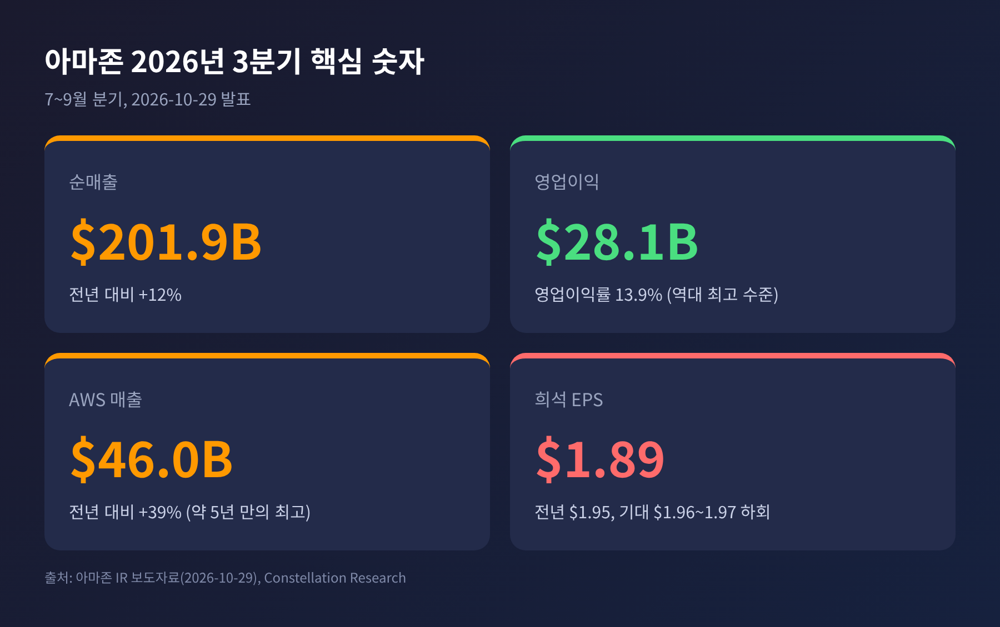
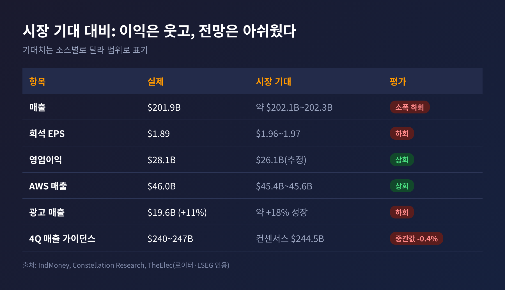
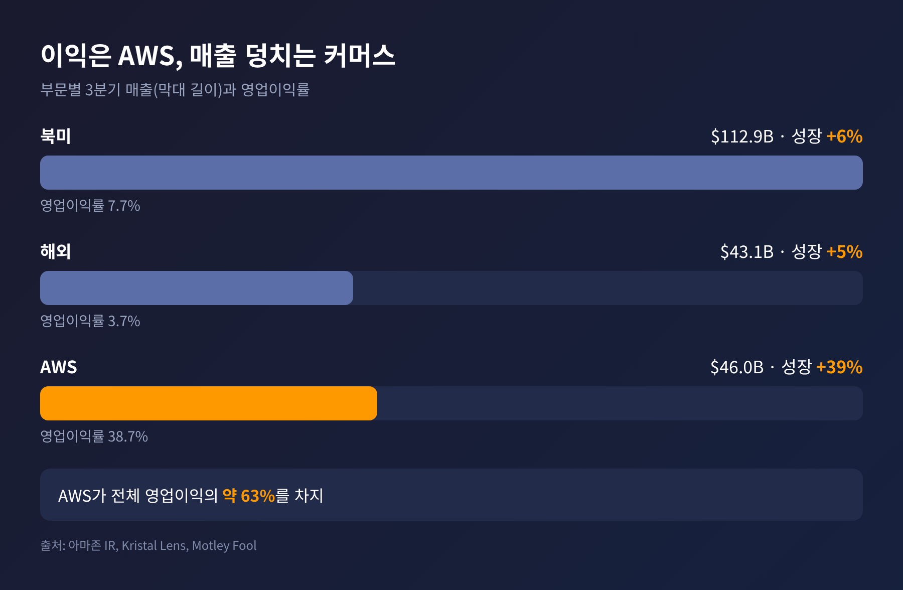
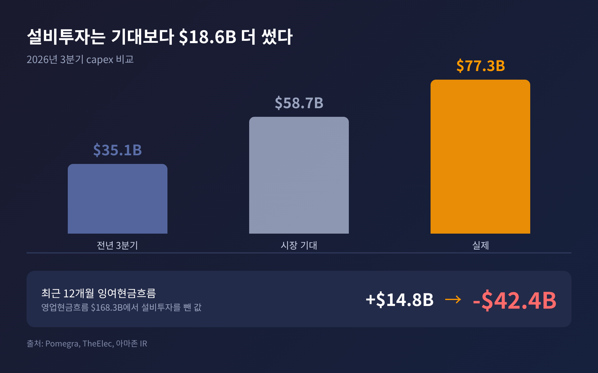
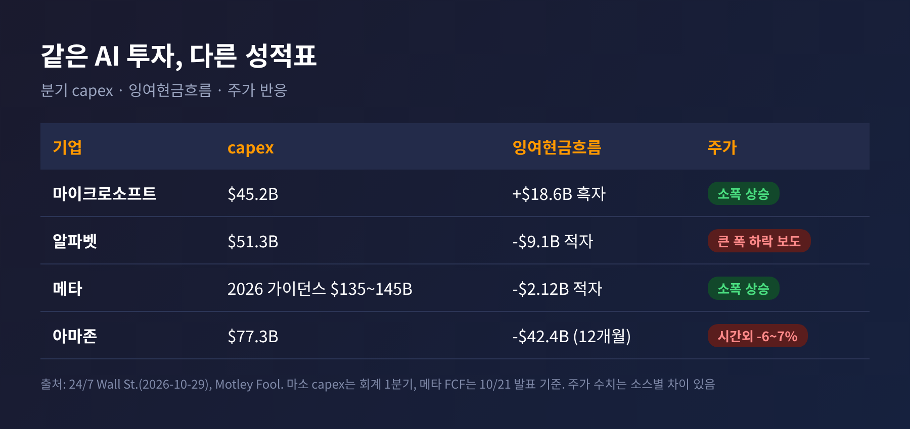
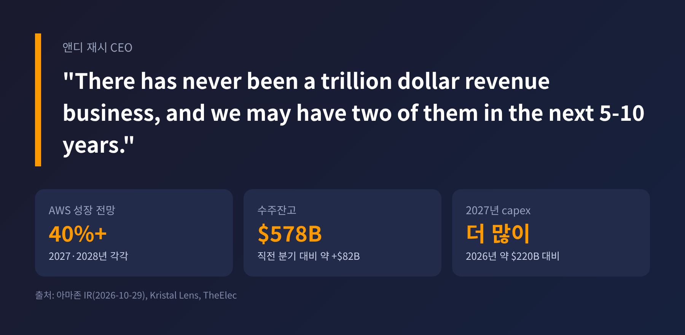

아마존 3분기 실적, AWS 39% 성장에도 주가 7% 급락한 이유

아마존이 10월 29일(미국 시간) 장 마감 후 2026년 3분기 실적을 내놓았습니다. 클라우드 사업 AWS는 약 5년 만에 가장 빠르게 성장했지만, 주가는 시간외 거래에서 6~7% 밀렸습니다. 이번 글에서는 숫자 자체보다 시장이 왜 그렇게 반응했는지를 정리해 보겠습니다.
3줄 요약
1. 매출 $201.9B(+12%)는 기대를 소폭 밑돌았고, 영업이익은 $28.1B로 기대를 웃돌았습니다.
2. AWS는 +39%로 재가속했지만, 분기 설비투자 $77.3B와 12개월 잉여현금흐름 -$42.4B가 발목을 잡았습니다.
3. 같은 날 시장은 현금이 남는 마이크로소프트에는 관대했고, 현금이 마이너스인 쪽에는 엄격했습니다.

■ 무슨 일이 있었나
숫자부터 보겠습니다. 달러 원문 기준입니다.
3분기 순매출은 $201.9B로 1년 전보다 12% 늘었습니다. 원화로는 1달러에 1,400원을 가정하면 약 283조원입니다. 환율에 따라 달라지는 값이므로 참고만 하시기 바랍니다.
영업이익은 $28.1B였습니다. 1년 전 $17.4B에서 크게 뛰었고, 영업이익률은 13.9%로 회사 역사상 가장 높은 수준으로 보도됐습니다. 반면 순이익은 $20.7B로 전년 $21.2B보다 줄었습니다. 주당순이익(EPS)은 $1.89였습니다.
이익이 늘었는데 순이익이 줄어든 이유는 비교 대상에 있습니다. 2025년 3분기에는 앤트로픽 투자에서 생긴 세전 평가이익 $9.5B가 들어 있었습니다. 올해는 그만한 일회성 이익이 없습니다. 영업이익만 놓고 보면 61% 증가한 셈입니다.
시장 기대와 비교하면 결과는 엇갈립니다. 매출은 기대치(약 $202.1B~$202.3B)를 0.1% 안팎으로 밑돌았고, EPS는 기대치($1.96~$1.97)보다 4% 정도 낮았습니다. 영업이익은 한 추정치($26.1B)보다 약 7.6% 높았습니다. 소스마다 기대치가 조금씩 달라 범위로 적었습니다.

■ 시장이 실망한 세 가지 지점
주가는 정규장에서 4.25% 하락한 $243.79로 마감했습니다. 이 하락은 실적 발표 전에 이미 일어난 것입니다. 발표 후 시간외에서는 낙폭이 6~7%로 커졌습니다.
첫째는 돈의 흐름입니다. 3분기 설비투자(capex, 데이터센터·서버 같은 설비에 쓴 돈)는 $77.3B였습니다. 시장이 예상한 약 $58.7B를 크게 웃돌았고, 1년 전 $35.1B의 두 배가 넘습니다.
둘째는 가이던스, 곧 회사가 내놓은 다음 분기 전망입니다. 4분기 매출은 $240B~$247B로, 중간값이 로이터가 인용한 기대치 $244.5B보다 약 0.4% 낮았습니다. 크게 빗나간 수준은 아니지만, 성수기 분기라는 점에서 기대를 키울 만한 요소가 없었다는 평가가 나왔습니다.
셋째는 광고입니다. 광고 매출은 $19.6B로 11% 늘었습니다. 시장이 기대한 18% 안팎에는 못 미쳤고, 로이터는 7분기 만의 첫 부진이라고 보도했습니다. 아마존은 프라임데이가 올해 2분기로 옮겨 간 영향이라고 설명하며, 4분기에는 높은 10%대 성장을 회복하겠다고 밝혔습니다.
다만 정리해 둘 점이 있습니다. 프라임데이 이동 시점을 두고는 소스 사이에 상반된 서술이 있었습니다. 아마존 발표와 다수 매체는 2분기로 이동했다고 전했고, 한 매체만 반대로 적었습니다. 이 글은 아마존 발표를 따랐습니다.
■ AWS는 되살아났고, 커머스는 아직 느립니다
좋은 소식부터 보겠습니다.
AWS 매출은 $46.0B로 39.3% 성장했습니다. 약 5년 만에 가장 빠르고, 직전 2분기의 37%보다 높습니다. 영업이익은 $17.8B로 1년 전 $11.4B에서 늘었고, 영업이익률은 약 38.7%입니다. 연환산 매출은 $184B에 이릅니다.
앞으로의 일감도 쌓이고 있습니다. 수주잔고는 $578B로, 한 분기 만에 약 $82B 늘었습니다. 경영진은 2027년, 2028년과 2029년 일부까지 가시성이 있다고 말했습니다. 앤디 재시 CEO는 AWS가 2027년과 2028년 모두 40% 이상 성장할 수 있다고 내다봤습니다.
반면 커머스는 차분합니다. 북미 매출은 $112.9B로 6%, 해외는 $43.1B로 5% 늘었습니다. 프라임데이 이동 효과가 없었다면 전체 성장률이 약 16%였을 것이라는 것이 아마존의 추정입니다. 영업이익률은 북미 7.7%, 해외 3.7%로, AWS의 38.7%와는 비교가 되지 않습니다.
그래서 이런 구도가 나옵니다. AWS 한 부문이 전체 영업이익의 약 63%를 만들어 냅니다. 아마존은 사실상 클라우드가 이익을 내고, 커머스가 그 위에서 성장을 받치는 회사가 됐습니다.
한계도 있습니다. AWS의 분기 순증 매출은 $3.75B로, 2분기의 $4.65B보다 줄었습니다. 또 AI 사업의 마진은 기존 AWS 서비스보다 낮아서, AI 비중이 커질수록 AWS 전체 마진을 깎을 수 있다는 지적이 있습니다.

■ 성장의 값: 설비투자와 잉여현금흐름
이번 실적의 가장 무거운 숫자는 잉여현금흐름(FCF)입니다. 영업으로 번 현금에서 설비투자를 뺀 값입니다.
최근 12개월 영업현금흐름은 $168.3B로 29% 늘었습니다. 그런데 설비투자가 그보다 빠르게 늘면서 잉여현금흐름은 -$42.4B가 됐습니다. 1년 전에는 +$14.8B였습니다. 3분기 한 분기만 떼어 보면 약 -$33.5B로 계산됩니다.
부족한 돈은 빚으로 메우고 있습니다. 장기부채는 약 $173B로, 지난해 12월 이후 거의 3배가 됐습니다. 분기 이자비용도 $1.7B로 세 배 넘게 불었습니다.
올해 설비투자 계획은 약 $220B로 유지됐습니다. 문제는 내년입니다. 재시 CEO는 2027년 투자가 올해보다 "meaningfully more", 즉 의미 있게 많을 것이라고 했습니다. 구체적인 금액은 내놓지 않았습니다.
시장이 불안해하는 지점이 여기입니다. 수주잔고가 있으니 투자가 헛돈은 아닐 것입니다. 그러나 투자가 매출로 돌아오기까지 시차가 있고, 그동안 현금이 마이너스인 상태가 이어집니다.

■ 자체 칩 트레이니움과 앤트로픽
아마존이 비용을 줄일 카드로 내세우는 것이 자체 AI 칩 트레이니움(Trainium)입니다.
경영진에 따르면 트레이니움과 CPU 칩 그래비톤의 매출 약정은 각각 1년 전보다 20배 넘게 늘었습니다. 자체 칩을 쓰는 고객은 3분기에 $2B 이상을 아꼈다고 합니다. 아마존의 AI 서비스 베드록에서 돌아가는 작업 대부분도 트레이니움 위에서 실행됩니다. 이 칩을 2027년 말부터는 AWS 밖에도 팔겠다는 계획까지 나왔습니다.
개발자 진입 장벽도 낮췄습니다. 오픈소스 도구 TorchNeuron으로 기존 PyTorch 코드를 다시 짜지 않고 트레이니움에서 돌릴 수 있습니다. 기존 개발 환경에서 갈아타는 부담을 줄이려는 시도입니다. 다만 트레이니움의 매출 절대 금액이나 칩 수량은 이번 소스에서 확인되지 않았습니다.
앤트로픽과의 관계는 이 흐름의 중심에 있습니다. 올해 4월 아마존은 앤트로픽에 $5B를 우선 투자하고 최대 $20B를 더 넣기로 했습니다. 이전 투자 $8B를 합치면 최대 $25B 안팎의 규모입니다. 앤트로픽은 향후 10년간 AWS에 $100B 이상을 쓰기로 약속했고, 최대 5GW 용량을 확보하며, 트레이니움2부터 4까지를 쓰기로 했습니다.
양날의 검입니다. 앤트로픽 투자는 지난해 3분기 순이익을 $9.5B 부풀렸고, 올해는 그 효과가 빠져 순이익이 줄었습니다. 반대로 앤트로픽은 AWS의 큰 고객이자 칩의 시험대입니다. 이번 3분기 실적에서 앤트로픽 몫이 얼마인지는 공개된 수치가 없습니다.
■ 마이크로소프트·알파벳·메타와 무엇이 달랐나
같은 주에 빅테크 실적이 줄줄이 나왔습니다. 숫자만 놓고 보면 모두 막대한 투자를 하고 있습니다. 그런데 주가 반응은 달랐습니다.
마이크로소프트는 매출 $92.3B(+19%), 애저(Azure) 성장률 48%로 기대(44%)를 넘었습니다. 설비투자 $45.2B를 쓰고도 잉여현금흐름이 +$18.6B로 흑자를 유지했고, 주가는 소폭 올랐습니다. 알파벳은 설비투자 $51.3B에 잉여현금흐름 -$9.1B였고, 회사채 발행과 주식 매각으로 돈을 조달하면서 주가가 크게 내렸다는 보도가 나왔습니다. 메타는 잉여현금흐름이 -$2.12B로 소폭 마이너스였지만 AI 투자를 주로 광고 수익으로 충당하는 구조이고, 주가는 소폭 올랐습니다.
아마존은 그 사이 어디쯤일까요. 성장은 마이크로소프트에 견줄 만큼 가속했습니다. 하지만 현금흐름은 알파벳 쪽에 가깝고, 규모(-$42.4B)는 더 큽니다. 이 비교는 제 해석입니다. 시장이 "성장 속도"보다 "그 성장을 누가 자기 돈으로 감당하는가"를 더 따지기 시작했다는 읽기입니다.
참고로 소스별로 주가 수치가 엇갈리는 부분이 있습니다. 한 기사는 알파벳이 약 11% 하락했다고 썼는데, 같은 기사의 시세 정보는 12.6% 하락으로 표시됐습니다. 아마존에 대해서도 오전 스냅샷은 -2%였으나 실제 종가는 -4.25%였습니다. 각 사의 세부 실적은 이미 다룬 글에서 정리했으므로 여기서는 비교에 필요한 부분만 인용했습니다.

■ 앞으로 지켜볼 것
전망은 세 가지 질문으로 압축됩니다.
첫째, AWS의 40% 성장이 현실이 되는가. 재시 CEO는 5년 안에 AWS 연매출 $1조 가능성까지 언급했습니다. 병목은 수요가 아니라 공급입니다. 데이터센터와 전력, 칩을 얼마나 빨리 늘리느냐가 관건이라고 경영진이 밝혔습니다.
둘째, 4분기에 광고가 회복되는가. 높은 10%대 성장을 약속했으니 연말 성적표가 첫 검증이 됩니다. 4분기 영업이익 가이던스는 $28.5B~$33.5B로, 1년 전 $25.0B보다 높습니다.
셋째, 2027년 투자 규모와 재무 구조입니다. 올해 $220B보다 더 쓴다고 했는데, 부채 $173B와 이자 부담이 함께 커집니다. 영업현금흐름이 설비투자를 따라잡는 시점이 언제인지가 주가를 가를 변수입니다.

정리하면 이렇습니다.
아마존의 3분기는 "잘했지만 비싸게 샀다"는 평가로 요약됩니다. 성장은 확실히 빨라졌고, 그 대가는 마이너스 현금흐름과 늘어난 빚입니다.
이번 실적이 던지는 질문은 하나입니다. 지금의 투자가 내일의 현금이 되어 돌아올 것인가.
AWS의 수주잔고가 그 답의 일부를 쥐고 있습니다. 나머지는 앞으로 몇 분기의 숫자가 말해 줄 것입니다.
이 글은 공개된 실적 자료를 정리한 해설이며, 특정 종목의 매수·매도를 권유하는 투자 권유가 아닙니다. 투자 판단과 그 책임은 투자자 본인에게 있습니다.
출처: 아마존 IR 보도자료(2026-10-29), Constellation Research, Motley Fool, TheElec, Pomegra, Kristal Lens, simpletechtrend, Marketing4eCommerce, IndMoney, 24/7 Wall St., SiliconANGLE